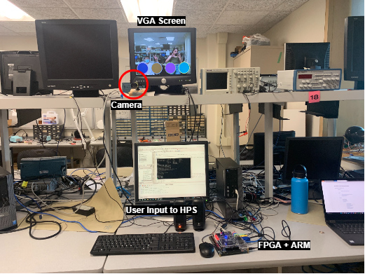

The FPGA must communicate with the camera to stream in image data. This data is saved on a memory buffer, and we use this input to do image processing computations in Verilog. We also need a method to project this video (which to the FPGA is a matrix of values) onto the VGA screen in a timely, realistically colored, and intuitive way for the human user. We wrote a custom VGA driver to essentially parse the camera input data and store it in a way that the VGA driver module could quickly read. We also had to mirror the video to create a system that was more intuitive for the user.
The second part required us to be able to display graphics from the ARM processor (HPS) simultaneously with the video stream. This was accomplished by drawing a weighted average of both inputs. For example, the pixel value displayed on the VGA screen could be one half the value from the camera input, and one half the value from a shape being drawn on the screen. Adjusting these fractions creates varying transparency with the HPS-drawn image and the camera feed. We settled on 3/4 camera feed, 1/4 HPS.
The color detection algorithm parses through the camera input by reading each value from the memory buffer. Using bitwise operations on the RGB values, we determined that a pixel-square is red enough if there is more red than green and blue combined, multiplied by a factor. We later changed to detecting blue instead of red (most human skin tones have a lot of red in them, and not much blue, so blue was more precise) using this same method, but swapping red and blue. The FPGA passed a 30x40 matrix to the HPS. Each entry in the matrix contained the number of pixels that were red (or blue) enough.
The third part of the system was our C code running on the ARM processor on the DE1-SoC FPGA. Here, we parsed certain values from the 30x40 matrix (sent from the FPGA) depending on the game we were running.
Our drum/guitar program is modular. You can initiate numDrum number of drum circles, as many as you have audio wav files for, and that number of circles will be generated with a random color, evenly spaced, with their own hit box to determine if the drumstick is within the bounds of the drum. The audio files corresponding to each also saved on the SD card, and are played from the HPS, which connects to the on-board audio jack. A second program, etch-a-sketch, can also run on the HPS. Rather than playing a sound when the wand is detected, it draws a large pixel onto the VGA screen.
This wasn't a submodule of the project, but guided a lot of our design choices. Like all ECE projects, we work in the real world, where cameras are noisy, people move unpredictably, and latency exists. The color detection algorithm, for example, was found by trial and error. People wear colorful shirts (i.e Bruce) and we wanted a system that would respond to the drumstick, not things in the background. The NTSC camera also has an auto-gain feature that we cannot change. If there are too few colors, the camera will balance out the colors and create a greyscale image. This means we need a background with enough contrast, and the subject cannot stand too close to the camera. The lights in the lab are very bright depending on the angle of the camera, which drastically changes the intensity of colors. In the light, a blue water bottle can appear greenish-grey. This would not trigger our color detection algorithm. Conversely, a white t-shirt can appear blue and set off our program like crazy. 